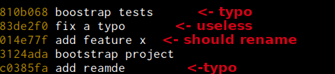
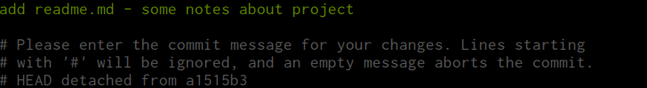
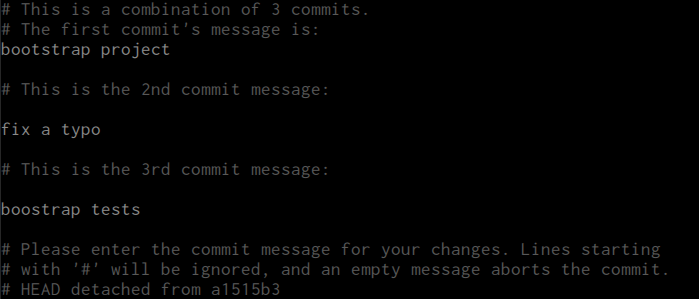
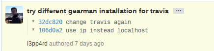
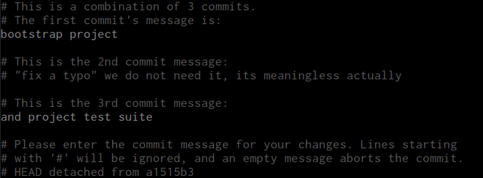
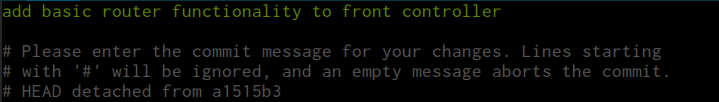
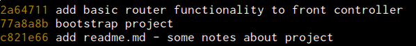

git log --pretty=oneline --abbrev-commitrebase your feature branches
mkdir ~/project && cd ~/project
git init
touch LICENSE
git add LICENSE
git commit -am 'initial commit - set license'
git remote add origin https://github.com/user/project.git
git checkout -b feature/project-bootstrapAfter a while...
Do you want this to go into master production stream?
Interactively rebase 5 commits from HEAD
git rebase --interactive HEAD~5At this point we can choose what to do with commits. Rebase will rewind the chosen number of commits and modify them accordingly to prefered changes.
Initially rebase will stop to rename the first commit, we rename it properly:
Next, rebase will stop on "boostrap project" wich will have two commits squashed
Now if we had pushed our commits to git repository in any branch name, we could reference these commits with their hashes. This way it could look like:
Since we haven't, we can just leave those as extra commit messages
Finally, it will stop to rename "add feature x" commit, it is not clear what feature we have added, lets fix it as well:
When we save and close it, rebase will finish
And instead of...
We have:
Which history log do you choose to see in production?
Before merging it back to master - make sure you are up to date
git fetch
git rebase feature/project-bootstrap origin/master